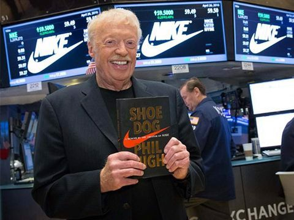
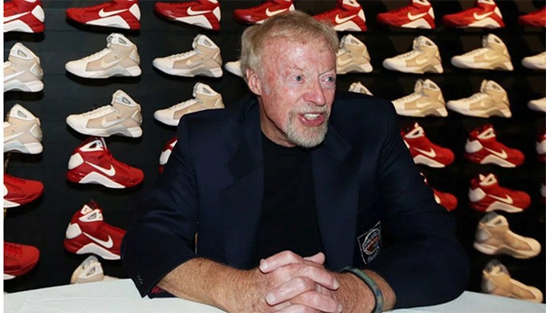

Phil Knight, nhà đồng sáng lập Nike tốt nghiệp chuyên ngành báo chí năm 1959 nhưng sau đó nảy ra ý tưởng khởi nghiệp về giày thể thao khi theo học MBA tại Stanford.
Phil Knight, nhà đồng sáng lập Nike sinh ngày 24/2/1938. Ông theo học Đại học Oregon và tốt nghiệp năm 1959 chuyên ngành báo chí. Sau khi phục vụ trong quân ngũ một năm, ông trở lại trường học và nhận bằng MBA từ Trường Kinh doanh Stanford. Knight nảy ra ý tưởng thành lập công ty Blue Ribbon Sports (BRS) - tiền thân của Nike trong suốt thời gian học tại Stanford. Ông hợp tác với huấn luyện viên môn điền kinh tại Oregon, Bill Bowerman và mỗi người góp 500 USD vào công ty. Cùng Sneaker Addictor tìm hiểu nhé.
Chiến lược ban đầu của BRS là nhập khẩu giày thể thao Nhật Bản mang tên Onitsuka Tigerers và bán chúng với giá cao hơn ở Mỹ. Khi Bowerman có những thiết kế riêng, BRS mở rộng sang thị trường châu Á và sản xuất giày tại đây để có giá thành rẻ hơn, nhằm cạnh tranh với các đối thủ như Adidas - cũng chuyển hoạt động sản xuất ra ngoài nước Đức.
Năm 1971, công ty chính thức đổi tên thành Nike. Khi đó, một số vận động viên nổi tiếng đã sử dụng những đôi giày mang thương hiệu này, giúp tăng gấp đôi lợi nhuận hàng năm của hãng. Sự kết nối giữa Knight và Bowerman với cộng đồng chạy bộ và sự chú trọng vào sản xuất sản phẩm chất lượng cao giúp Nike trở thành lựa chọn hàng đầu của các vận động viên chuyên nghiệp.
Công ty trình làng mẫu giày Nike Cortez cùng thời điểm Thế vận hội Mùa hè 1972 tại Munich và Knight chắc chắn rằng giày của hãng là lựa chọn hàng đầu của các vận động viên. Mẫu giày Cortez đa dạng về màu sắc và lần đầu tiên gắn logo “swoosh” của Nike, biến chúng trở thành một trong những mẫu sneaker có sức hấp dẫn cả về khía cạnh thời trang và chức năng. Nike tăng trưởng nhanh chóng trong suốt thập niên 70 và đầu thập niên 80. Doanh thu của công ty tăng từ 28,7 triệu USD năm 1973 lên 867 triệu USD vào năm 1983.
Hãng ra mắt mẫu Air Force 1 vào năm 1982. Đây là mẫu giày đầu tiên có Nike Air, một túi khí ở gót giày cung cấp thêm đệm và hỗ trợ cho người chơi bóng rổ. Sản phẩm trở thành một trong những đôi giày thể thao phổ biến nhất từ trước đến nay với hàng triệu đôi được bán ra mỗi năm. Một trong những thành tựu lớn nhất của Knight là ký thành công hợp đồng với Michael Jordan và ra mắt Air Jordan – một trong những thương hiệu sneaker thành công nhất mọi thời đại. Nike bắt tay với Jordan vào năm 1985, khi anh là một ngôi sao bóng rổ trên đường chinh phục NBA. Hợp đồng giữa 2 bên có thời hạn 5 năm với giá trị 500.000 USD/năm, một con số lớn chưa từng có vào thời điểm đó.
Tháng 3 cùng năm, Air Jordan có mặt tại các cửa hàng với giá 65 USD/đôi. Chỉ 2 tháng sau, doanh thu từ sản phẩm này đã đạt 70 triệu USD và tăng lên hơn 100 triệu USD vào cuối năm.
Đến giữa những năm 1980, doanh số của Nike bắt đầu sụt giảm. Knight hiểu rằng công ty cần thay đổi. Ông nhận ra dù Nike đang tập trung quảng cáo cho các vận động viên hàng đầu, phần lớn khách hàng của họ lại là những người bình thường và không dùng sản phẩm của hãng cho các hoạt động thể thao. Knight quyết định thay đổi Nike - từ một công ty định hướng sản phẩm - sang một công ty định hướng tiếp thị. Ông bắt đầu quan tâm đến khách hàng bình thường và nhờ đó doanh số tăng trưởng trở lại. Cuối năm 1991, hãng lấy lại vị thế của mình với doanh thu hơn 3 tỷ USD.
“Điều quan trọng nhất chúng tôi làm là quảng bá sản phẩm. Marketing kết nối toàn bộ tổ chức lại với nhau. Những yếu tố thiết kế và đặc điểm chức năng của chính sản phẩm là một phần trong quá trình tiếp thị”, Knight phát biểu trên Harvard Business Review năm 1992. Tài năng tiếp thị của Knight xuất phát từ thực tế là ông không chỉ tập trung vào việc bán giày, ông luôn tạo ra điều gì đó còn nhiều hơn thế. Tại một hội nghị công nghiệp vào giữa những năm 1970, Knight chỉ ra điểm khác biệt quan trọng trong chiến lược marketing của mình. Ông nói rằng mình không phải người trong ngành kinh doanh giày - mà đúng hơn là đang làm việc trong ngành kinh doanh giải trí.
Vào những năm 1990, Nike phải đối mặt với một trở ngại khác: công ty vướng vào bê bối đối xử tệ bạc và bóc lột sức lao động của công nhân. Khách hàng kêu gọi tẩy chay thương hiệu và phản đối bên ngoài các cửa hàng, khiến Nike bị người tiêu dùng quay lưng suốt gần một thập kỷ.
Doanh số tụt dốc thảm hại khiến công ty buộc phải sa thải nhân viên vào năm 1998. Một lần nữa, Knight - người giữ vị trí CEO vào thời điểm đó – bắt đầu thực hiện những thay đổi để cứu thương hiệu. Chấp nhận những điều tiếng của công ty, ông tăng lương tối thiểu cho công nhân, cải thiện quy phạm lao động và đảm bảo các nhà máy có không khí sạch. Niềm tin của người tiêu dùng quay trở lại và Nike một lần nữa vươn lên đỉnh cao.
Đến tháng 6/2016, Phil Knight từ chức Chủ tịch hội đồng quản trị Nike sau 52 năm làm việc miệt mài với thương hiệu này. Hiện hãng thời trang thể thao của ông có giá trị thị trường hơn 270 tỷ USD, doanh thu năm 2020 đạt 37,4 tỷ USD. Cùng với sự phát triển của Nike, nhà sáng lập Phil Knight cũng ngày càng giàu có. Theo thống kê Real Time của Forbes, Knight và gia đình đang nắm trong tay khối tài sản 62,1 tỷ USD và là người giàu thứ 19 trên thế giới.
Tiếp tục theo dõi Authentic Shoes để cập nhật những thông tin mới nhất về thời trang và giày dép nhé.